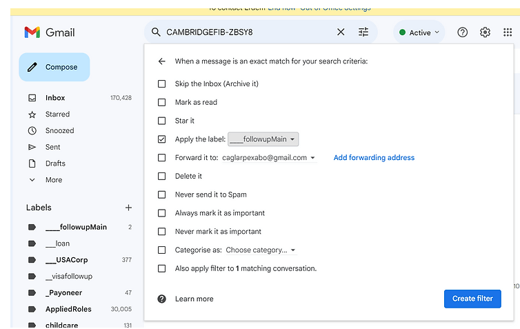

Using Filters in Gmail

Harness the Power of Automation: How to Use Filters in Gmail for a Streamlined Inbox
Gmail is more than just an email service; it's a comprehensive tool that can significantly enhance your productivity when used to its full potential. Among its suite of features, Gmail's filtering capabilities stand out as a powerful way to manage and organize your emails automatically. By setting up filters, you can sort incoming emails effortlessly, assign labels for quick access, forward messages when needed, and much more, all without lifting a finger after the initial setup. Let's delve into how you can harness the power of filters to maintain an organized inbox.
Getting Started with Filters in Gmail
Creating a filter in Gmail is a straightforward process. Here's a step-by-step guide to setting up your first filter:
Step 1: Accessing Settings
-
Click on the gear icon in the top right corner of your Gmail interface to reveal a dropdown menu.
-
Select "See all settings" to open the full settings menu.
Step 2: Navigating to Filters
- Within the settings menu, locate and click on the "Filters and Blocked Addresses" tab to view all existing filters or create new ones.
Step 3: Creating a New Filter
- Click the "Create a new filter" button, which will prompt you to define the criteria for your new filter.
Step 4: Defining Filter Criteria
-
In the filter creation window, you can specify various criteria such as the sender's email address, keywords in the email subject or body, and even date ranges or attachment sizes.
-
For example, to filter all emails from a particular sender, enter their email address in the "From" field. To capture emails related to a specific project, you might enter relevant keywords in the "Subject" or "Has the words" fields.
Step 5: Choosing Filter Actions
-
Once you've set your criteria, click on "Create filter with this search" to choose what happens to emails that match your filter.
-
You can select actions like "Apply the label" to categorize emails, "Forward it to" to automatically send them to another address, or "Skip the Inbox (Archive it)" to keep your inbox clutter-free.
Step 6: Finalizing Your Filter
- After selecting the desired actions, click "Create filter" to activate it. You can also apply the filter to matching conversations already in your inbox.
The Benefits of Using Gmail Filters
Time-Saving Convenience: Filters can sort your emails the moment they arrive, saving you the time and effort of manual organization.
Enhanced Focus: With less clutter in your primary inbox, you can concentrate on emails that require your immediate attention.
Custom Organization: Labels applied through filters can help you find emails quickly and categorize them in a way that makes sense for your workflow.
Prioritization of Tasks: By directing emails into specific folders, you can prioritize your tasks and handle them in order of importance.
Avoiding Distractions: Filters can also be used to ensure that less urgent emails bypass your inbox entirely, allowing you to review them at a more convenient time.
Conclusion
Embracing Gmail's filtering system can be a game-changer in managing your digital communication. By automating the sorting process, you free up time to focus on what's important, ensuring that you remain productive and your inbox stays under control. Whether you're inundated with promotional emails, project updates, or client correspondences, Gmail filters can help you maintain order amidst the chaos. Set up your filters today, and take the first step towards a more organized, efficient inbox experience.
Imported from rifaterdemsahin.com · 2024